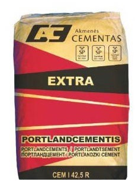

Cementas Kaina, Cementas Akmenės | UAB Vedrana
 e-parduotuvė Akcijos Apie mus Kontaktai Vilniaus medienos centras Statybinės medžiagos Stogo dangos Šiltnamiai
e-parduotuvė Akcijos Apie mus Kontaktai Vilniaus medienos centras Statybinės medžiagos Stogo dangos Šiltnamiai
Cementas
mob. 8 656 41 331mob. 8 640 62 626
mob. 8 687 33 909
tel. 8 52 61 80 21 info@vedrana.lt
Cementas, 35 kg / vnt
|5.10 € Pirkti internetu..
Baltas cementas vnt
|6.89 € Pirkti internetu.. Mitto cementas Lietuviškas cementas Baltas cementas Baltarusiškas cementas Švediškas cementas
Cementas – viena pagrindinių statybinių medžiagų, naudojamų statybose. Tai statybų duona, be kurios negali išsiversti nei vienas statybų objektas. Cementas buvo pradėtas naudoti dar senovės Graikijoje, vėliau antikos laikų Romoje.
UAB Vedrana siūlo cementą kaip mažmeninėje prekyboje taip ir didmeniniais kiekiais. Mūsų siūlomas cementas sufasuotas į 35 kg maišus. Viename padėklė 45 cemento maišai. UAB Vedrana siūlo itin stiprų ir švarų cementą be priemaišų. Cemento markė CEM I 42,5 R, klasė 500. Taip pat galime pasiūlyti populiarų rinkoje cementą markės CEM II 42,5 N, klasė 400.
Cementą galite įsigyti mūsų prekybos centre adresu Liepklanio 35A, Vilnius. Taip pat teikiame pristatymo paslaugą. Pristatymo kaina priklauso nuo užsakyto cemento kiekio bei pristatymo adreso. Didmeninėje prekyboje cementą pristatome 24 tonų furomis.
Tam kad cementą paruošti darbui, jums reikės paprasto statybinio smėlio bei vandens mišinio. Viską sumaišius kartų su sausu cementu, galėsite pradėti darbus. Svarbu, paruoštą mišinį nepalikti ilgam, kadangi mišinys sukietės kelių valandų bėgyje.
Cemento gamykla Lietuvoje yra Naujojoje Akmenėje. UAB Vedrana yra tiesioginis atstovas Akmenės Cemento gamyklos. Be lietuviško cemento siūlome baltarusišką cementą bei švedišką cementą.
Žymos:cementas cemento kaina cementas kaina akmenės cementas
Atgal mob. 8 656 41 331
mob. 8 640 62 626
mob. 8 687 33 909
tel. 8 52 61 80 21 info@vedrana.lt 1000 3000 Visos akcijos Siųsti užklausimą Pildyti užsakymą Kaip pirkti Akcijų prenumerata PRODUKTAI Prekyba, Prekių Katalogas Cementas, kitos birios statybinės medžiagos
Cementas
Mitto cementas Lietuviškas cementas Baltas cementas Baltarusiškas cementas Švediškas cementas KAIP PIRKTI?PREKYBOS CENTRE
prekybos centre apmokėjimas vietoje prekes jūsų bagažinėjeTELEFONU
skambutis elektroninė sąskaita prekės jūsų kiemeINTERNETU
užklausa internetu elektroninė sąskaita prekės jūsų kiemeGALIMYBĖ PIRKTI LIZINGU
lizingo sutarties pasirašymas prekybos centre prekės jūsų kiemeATSISKAITYMAS SU KURJERIU
užklausa internetu arba skambutis prekės jūsų kieme atsiskaitymas su kurjeriu MES NE ELEKTRONINĖ PARDUOTUVĖ - MES TIKROJI PARDUOTUVĖ INTERNETE © 2008 UAB "Vedrana".